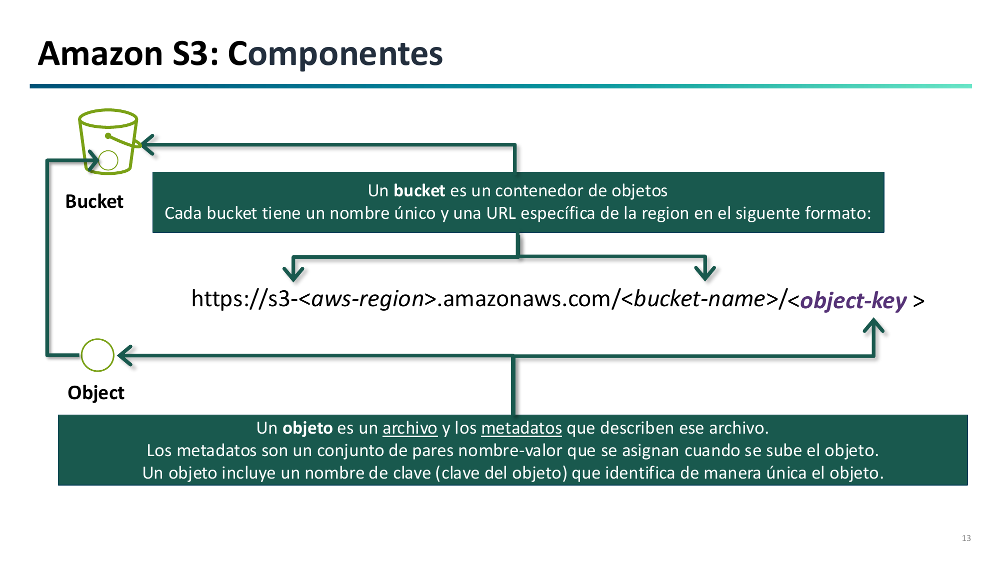
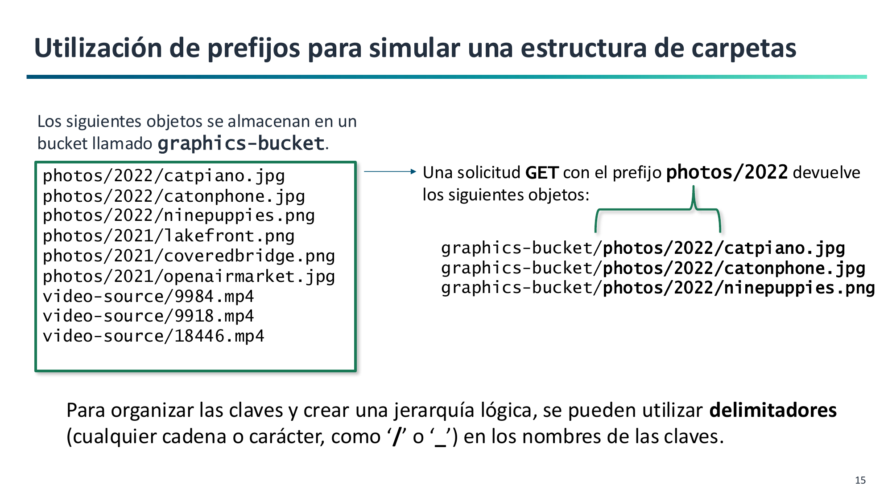
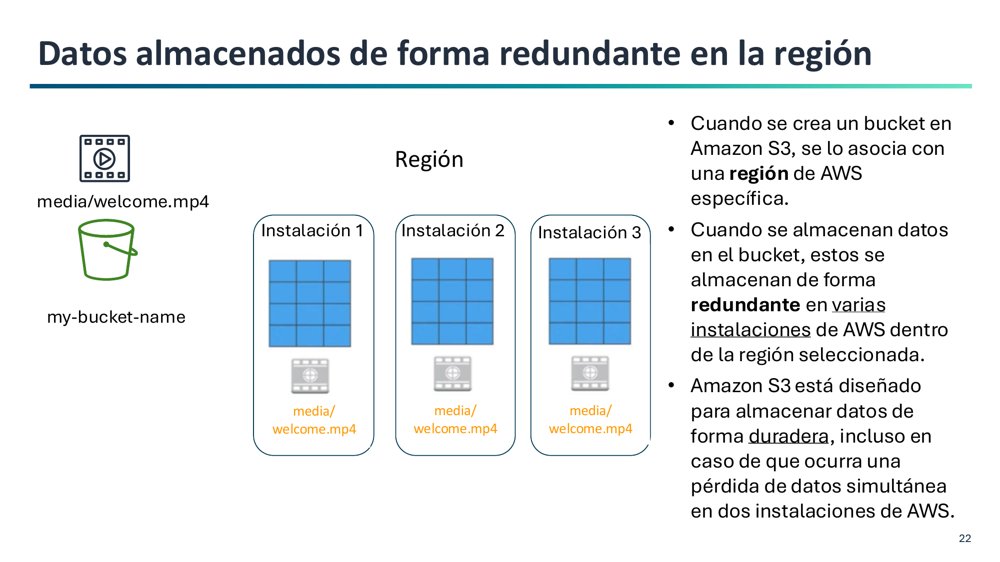
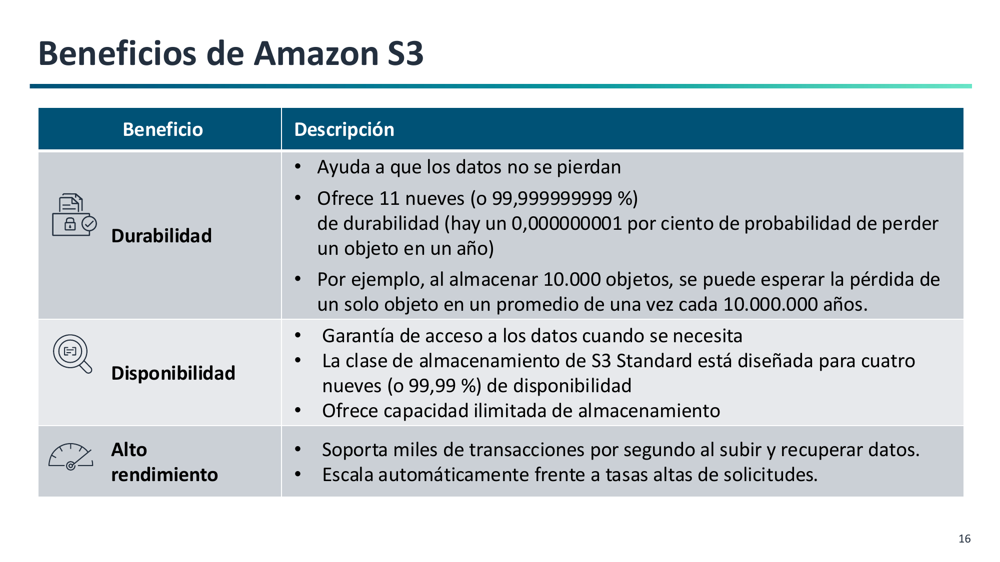
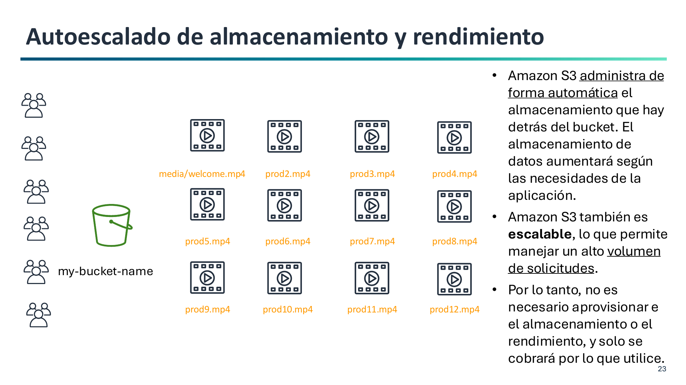
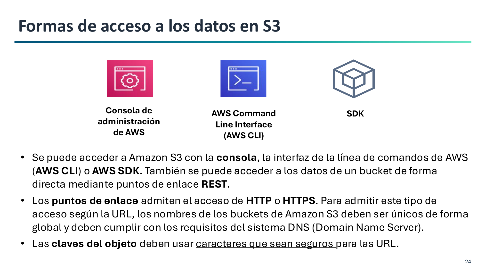

2. Arquitectura y Componentes de Amazon S3¶
Amazon Simple Storage Service (Amazon S3) es un servicio de almacenamiento de objetos gestionado a nivel global que garantiza una durabilidad del 99,999999999% (11 nueves) y escalabilidad automática.
Componentes Fundamentales: Buckets y Objetos¶
La arquitectura de S3 se compone de dos conceptos centrales:

1. Buckets (Contenedores)¶
Un bucket es el contenedor raíz de objetos en S3.
- Reglas de denominación DNS:
- Longitud entre 3 y 63 caracteres.
- Solo admite minúsculas, números y guiones (
-). - No puede contener mayúsculas, espacios, subrayados (
_) ni tener formato de dirección IP (192.168.1.1).
Espacios de Nombres en S3: Global vs. Account Regional
Al crear un bucket de propósito general (General Purpose Bucket), AWS ofrece dos modalidades de espacio de nombres (namespace):
- Shared Global Namespace (Tradicional / Por defecto):
- El nombre debe ser único en todo el mundo entre todas las cuentas de AWS. Si otra persona u organización ya lo ha registrado, no estará disponible.
- Es el formato estándar utilizado habitualmente y el que emplearemos en nuestros laboratorios asignando prefijos personales (ej.
abdan-tunombre-lab1).
- Account Regional Namespace (Novedad 2026 / Recomendado en producción):
- El nombre queda reservado exclusivamente para tu ID de cuenta de AWS en esa región, eliminando cualquier riesgo de colisión con otros clientes de AWS.
- Sigue la convención obligatoria:
{prefijo}-{id-cuenta}-{region}-an(ej.backups-123456789012-eu-west-1-an). - Simplifica el despliegue con Infraestructura como Código (IaC con Terraform o CloudFormation) y protege contra la ocupación maliciosa o accidental de nombres (name squatting).
2. Región Geográfica¶
Al crear el bucket se elige obligatoriamente la región de AWS donde residirán físicamente los datos.
- Residencia de datos (RGPD): Para cumplir con normativas de protección de datos personales de la UE, se eligen regiones europeas (como España
eu-south-2o Irlandaeu-west-1). - Latencia y coste: Seleccionar la región más cercana a los usuarios y verificar las tarifas por GB de cada región.
Estructura de un Objeto¶
Cada objeto almacenado en S3 consta de:
- Clave (Key): El identificador o nombre único del objeto dentro del bucket (hasta 1.024 bytes). Ejemplo:
fotos/2026/portada.jpg. - Valor (Value): El contenido binario del archivo (desde 0 bytes hasta 5 TB).
- ID de Versión: Cadena que identifica la versión cuando el versionado está activo.
- Metadatos: Información descriptiva del objeto.
La analogía del libro para los Metadatos
En un libro, el texto de las páginas representa los datos puros (Value), mientras que el título, el autor, el ISBN, la editorial y la fecha de publicación representan los metadatos: permiten identificar, catalogar y buscar la información sin necesidad de leer todo el libro.
- Metadatos del sistema: Asignados por AWS (
Content-Type,Content-Length,Last-Modified,ETag). - Metadatos de usuario: Pares clave-valor personalizados (
x-amz-meta-departamento: contabilidad).
Identificadores de un Objeto: S3 URI, ARN y Object URL¶
En la consola de Amazon S3, al seleccionar cualquier archivo, AWS ofrece tres formas distintas de identificarlo y referenciarlo. Cada formato responde a un propósito y ámbito de uso diferente:
flowchart TD
OBJ["<b>Objeto en Amazon S3</b><br/><code>factura.pdf</code>"]
OBJ -->|"AWS CLI y herramientas de datos"| URI["<b>S3 URI</b><br/><code>s3://mi-bucket/factura.pdf</code><br/><i>(Terminal, Scripts, Athena)</i>"]
OBJ -->|"Seguridad y Permisos"| ARN["<b>Amazon Resource Name (ARN)</b><br/><code>arn:aws:s3:::mi-bucket/factura.pdf</code><br/><i>(Políticas IAM, Bucket Policies)</i>"]
OBJ -->|"Acceso Web Universal"| URL["<b>Object URL (HTTPS)</b><br/><code>https://mi-bucket.s3.us-east-1...</code><br/><i>(Navegadores, Apps web, APIs)</i>"]1. S3 URI (Uniform Resource Identifier)¶
Identificador nativo utilizado internamente por las herramientas del ecosistema de AWS.
- Sintaxis:
s3://<nombre-bucket>/<clave-objeto> - Ejemplo:
s3://abdan-dortega-lab1/documentos/factura.pdf - ¿Dónde se utiliza?
- En la AWS CLI: es la dirección obligatoria en comandos de copia, sincronización y listado (
aws s3 cp,aws s3 sync,aws s3 ls). - En servicios de análisis y procesamiento de datos (Amazon Athena, AWS Glue, EMR).
- En scripts de automatización con Python y SDKs (
boto3). - Nota: Solo es comprensible por herramientas que integran las librerías de AWS; un navegador web no sabe resolver el protocolo
s3://.
- En la AWS CLI: es la dirección obligatoria en comandos de copia, sincronización y listado (
2. Amazon Resource Name (ARN)¶
Identificador unívoco universal que utiliza el motor de seguridad y gestión de identidades de AWS (IAM).
- Sintaxis:
- Para un bucket completo:
arn:aws:s3:::<nombre-bucket> - Para un objeto específico:
arn:aws:s3:::<nombre-bucket>/<clave-objeto> - Para todos los objetos de un bucket (comodín):
arn:aws:s3:::<nombre-bucket>/*
- Para un bucket completo:
- Ejemplo:
arn:aws:s3:::abdan-dortega-lab1/* - ¿Dónde se utiliza?
- En las directivas de seguridad dentro de las Políticas de IAM y las Políticas de Bucket (Bucket Policies), específicamente en la sección
"Resource": [...]. - En la configuración de roles, eventos y auditorías de seguridad.
- Nota: No se utiliza para descargar ni manipular archivos, sino para definir quién tiene permiso para acceder a ellos. Los triples dos puntos (
:::) reflejan que en los buckets globales se omiten la región y el identificador de cuenta.
- En las directivas de seguridad dentro de las Políticas de IAM y las Políticas de Bucket (Bucket Policies), específicamente en la sección
3. Object URL (Dirección Web HTTPS)¶
Dirección web estándar accesible a través del protocolo HTTPS seguro.
- Sintaxis:
https://<nombre-bucket>.s3.<region>.amazonaws.com/<clave-objeto> - Ejemplo:
https://abdan-dortega-lab1.s3.us-east-1.amazonaws.com/documentos/factura.pdf - ¿Dónde se utiliza?
- En navegadores web: para descargar o visualizar directamente el archivo desde internet.
- En aplicaciones web o móviles: para incrustar recursos en código HTML (
<img src="...">) o consumir ficheros mediante llamadas RESTGET. - Nota: Para que un usuario pueda abrir esta URL en su navegador sin recibir un error
403 Forbidden, el bucket u objeto deben haberse configurado con acceso público o el enlace debe generarse como una URL prefirmada (Presigned URL) temporal.
Tabla Comparativa de Identificadores¶
| Identificador | Protocolo / Prefijo | Ámbito de uso principal | ¿Se puede abrir en un navegador? |
|---|---|---|---|
| S3 URI | s3:// |
Comandos de terminal (AWS CLI), scripts y analítica de datos | No (solo clientes AWS) |
| ARN | arn:aws:s3::: |
Seguridad y permisos en Políticas de IAM y Bucket Policies | No (solo para reglas de control de acceso) |
| Object URL | https:// |
Acceso web directo, clientes HTTP, aplicaciones frontend y descargas | Sí (si los permisos lo autorizan) |
Espacio de Nombres Plano y Simulación de Carpetas¶
A nivel interno, S3 no tiene carpetas ni directorios reales. Es un almacén plano de pares clave-valor.

- Cuando vemos
ventas/2026/factura.pdf, la clave completa del objeto es esa cadena de texto íntegra. - La barra
/actúa simplemente como un delimitador lógico. - La consola web agrupa visualmente los objetos que comparten el mismo prefijo (prefix) para simular el aspecto de carpetas tradicionales.
Durabilidad y Redundancia en la Región¶
Los objetos en las clases estándar de S3 se almacenan de forma redundante y síncrona en un mínimo de 3 Zonas de Disponibilidad (AZs) dentro de la región seleccionada:

- Durabilidad de 11 nueves (99,999999999%): Diseñado para tolerar la pérdida física de dos instalaciones completas de centros de datos.
- Consistencia de datos: Ofrece consistencia fuerte de lectura tras escritura (Strong Read-After-Write Consistency) para operaciones
PUTyDELETEen todas las regiones de AWS. - Rendimiento por prefijo: Cada prefijo dentro de un bucket soporta de forma nativa al menos 3.500 escrituras (PUT/POST/DELETE) y 5.500 lecturas (GET/HEAD) por segundo.
Beneficios Principales de Amazon S3¶
Amazon S3 destaca en la nube por tres pilares fundamentales:

| Beneficio | Métrica / Garantía | Descripción técnica |
|---|---|---|
| Durabilidad | 11 nueves (99,999999999%) | Diseñado para evitar la pérdida o corrupción de datos. Con una probabilidad de pérdida del 0,000000001% anual, al almacenar 10.000.000 de objetos estadísticamente se perdería uno cada 10.000 años. |
| Disponibilidad | 4 nueves (99,99% en S3 Standard) | Garantía de tiempo de actividad del servicio para acceder a los datos en el momento en que se solicitan. |
| Alto rendimiento | Capacidad y transacciones elásticas | Permite almacenar un volumen ilimitado de datos y responder a miles de peticiones simultáneas por segundo en subida y descarga. |
Durabilidad vs. Disponibilidad: Un matiz conceptual clave
- Durabilidad: Garantiza que el archivo no se rompa, degrade ni pierda en los discos físicos (integridad y supervivencia del dato a largo plazo).
- Disponibilidad: Garantiza que el servicio web esté en línea y responda en tiempo y forma a las solicitudes de los clientes. Un objeto puede estar 100% a salvo y duradero en el centro de datos, pero temporalmente no disponible si una avería de red impide comunicar con el servidor.
Autoescalado de Almacenamiento y Rendimiento¶
Amazon S3 opera bajo una filosofía de almacenamiento sin servidor (serverless storage):

- Almacenamiento elástico automático: No es necesario planificar ni aprovisionar capacidad por adelantado. El espacio crece o decrece al ritmo de los archivos subidos o eliminados.
- Rendimiento adaptable: S3 escala automáticamente sus recursos de computación y red para digerir picos repentinos de tráfico sin saturarse.
- Pago por uso estricto: No existen cuotas fijas de entrada ni almacenamiento mínimo obligatorio; solo se factura por los gigabytes consumidos en cada instante y por las solicitudes ejecutadas.
Formas de Acceso a los Datos en S3¶
Para interactuar con los recursos de S3, AWS proporciona distintas vías adaptadas a perfiles operativos, administrativos y de desarrollo:

-
Consola de Administración de AWS (Web UI):
- Interfaz gráfica accesible desde el navegador.
- Ideal para familiarizarse con los conceptos, realizar configuraciones visuales y explorar el contenido.
-
AWS Command Line Interface (AWS CLI):
- Herramienta de terminal para automatizar tareas y administrar recursos mediante comandos y scripts.
- Ofrece comandos de alto nivel (
aws s3) y comandos de bajo nivel que mapean la API REST (aws s3api). - Es la herramienta protagonista de la segunda mitad de la Práctica 1.1.
-
Kits de Desarrollo de Software (AWS SDKs):
- Bibliotecas nativas para lenguajes de programación como Python (
boto3), Java, JavaScript/TypeScript, Go o C#. - Permite a las aplicaciones subir, transformar y leer objetos de S3 directamente desde el código fuente.
- Bibliotecas nativas para lenguajes de programación como Python (
-
Puntos de Enlace REST (HTTP / HTTPS Endpoints):
- Al ser un almacén web nativo, cada objeto cuenta con una dirección web directa (
https://<bucket-name>.s3.<region>.amazonaws.com/<clave-objeto>). - Cualquier cliente HTTP puede ejecutar operaciones
GET,PUToDELETEmediante peticiones REST estándar. - Por esta razón, los nombres de bucket deben ser globalmente válidos para DNS y las claves de los objetos deben utilizar caracteres seguros para la web (URL-safe).
- Al ser un almacén web nativo, cada objeto cuenta con una dirección web directa (